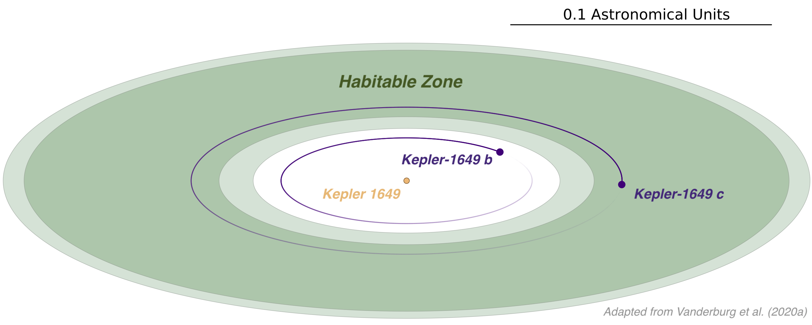

Unveiling the Detailed Properties of Terrestrial Exoplanets
Since the discovery of the first exoplanets in the late 1980s and early 1990s, our knowledge of other worlds has grown rapidly. Today, astronomers have discovered thousands of planets outside our Solar system, ranging from blazing-hot gas giants the size of Jupiter to rocky planets orbiting far enough from their stars for liquid water to plausibly exist on their surfaces. We have learned that exoplanets are extremely common in our galaxy; the question now is whether these planets are anything like the ones in our Solar system, and if any of them are hospitable to life like Earth.
Answering these questions is a top ambition for astronomers. In November 2021, the National Academies of Science Decadal Survey on Astronomy and Astrophysics identified the exploration of habitable exoplanets as the highest science priority for astronomy in the United States in the coming decade. To accomplish this goal, the report recommended construction of a large space telescope capable of taking images and spectra of Earth-like worlds to search for evidence of life outside the solar system. This ambitious plan will guide scientific efforts until the launch of this telescope in the 2040s.
However, this space telescope alone will not be sufficient to tell whether the planets it observes are habitable — or inhabited. We must understand the detailed properties of terrestrial planets and their systems before this telescope launches for it to achieve its full potential. Our team aims to answer a wide range of questions in preparation for our search for life outside the Solar System. Click on each question below to explore our work.
Our solar system has small rocky planets like the Earth and Mars, large planets with thick gas envelopes like Jupiter and Neptune, and nothing in between. But in exoplanet systems, planets intermediate to Earth and Neptune (called either super-Earths or mini-Neptunes) are ubiquitous. What are these planets like? Are they mostly scaled up rocky planets similar to Earth or are they mostly scaled-down gaseous planets like Neptune? And can we predict, given a planet's size and orbital location whether it will be rocky or gaseous?
Astronomers have made significant progress on this problem for close-in hot planets, but understanding the rocky/gaseous transition for cooler planets is an important open question. Our group uses space telescopes like Kepler and TESS to detect transiting planets and measure their radii, and spectrographs on the ground like the Planet Finder Spectrograph and HARPS-N to measure precise radial velocities and determine the planets' masses. Combining the planets' mass and radius yields the bulk density which can distinguish rocky and gaseous compositions.
Currently, our goal is to push planet density measurements to cooler and smaller planets than before. We do this by searching for transiting planets orbiting bright stars — the easiest ones to follow up with radial velocities — with TESS, and making the most precise radial velocity measurements possible, even in the presence of stellar activity.
Relevant work:
Learning about the geology of exoplanets is critically important to understanding habitability. The specific elements and minerals that make up a planet's crust and interior are of broad significance to issues ranging from the longevity of plate tectonics to biosignature false positives. The only way for astronomers to probe the interior elemental compositions of rocky planets is through observations of white dwarf stars, the dense, burnt-out remnants of stars like the Sun after they have exhausted their nuclear fuel. Occasionally, the planets, asteroids, and comets orbiting these dead stars venture too close to the white dwarf, are shredded by the remnant's intense gravity, are ground up by collisions, and are accreted onto the white dwarf. Once the planetary material is on the surface of the white dwarf, we can study its composition by observing spectra of the white dwarf.
In our group, we are taking advantage of the opportunity afforded by white dwarfs to study extrasolar geology. First, we are trying to better understand the process by which planetary material is accreted onto white dwarfs. We are searching for transiting debris clouds around white dwarfs so we can observe the process of planetary destruction in real time. In 2015, we found the first example of this process taking place around the star WD 1145+017. Since then, observations of this star have changed our picture of how planetary disruption takes place. We are also developing new tools to efficiently measure precise abundances from white dwarfs with evidence of accreted planetary material, so we can infer the material's elemental compositions in bulk.
Relevant work:
- Vanderburg et al. 2015b
- Xu et al. 2018
- Aloisi et al. in prep
- Badenas-Agusti et al. in prep
- Jenkins et al. in prep
In the Solar system, all eight of the major planets orbit in nearly the same plane, and the planets move in the same direction as the Sun's spin. Another important pattern in the Solar system is that the small, rocky planets tend to orbit close to the Sun, and the larger gas giant planets tend to orbit farther away. Centuries ago, these observations led astronomers to hypothesize that the planets formed from a disk of material and have remained in relatively similar orbits ever since. However, at least some exoplanet systems do not share this same orderly configuration. Instead, exoplanets sometimes are found with giant planets very close to their stars (the so-called hot Jupiters), and planets can orbit in different directions to one another and to the spins of their stars. This indicates that these exoplanet systems likely underwent a period of violent gravitational interactions that scrambled an orderly initial configuration. How common are these processes in exoplanet systems, and how do they influence the systems' eventual habitability?
Our team is studying the architectures of planetary systems by combining different observational techniques such as transits, radial velocities, astrometry, and Doppler tomography. By using multiple different views of the systems with these techniques, we can produce the most complete picture of a system's layout possible. We are using data from the Gaia spacecraft to measure the orientation of both planet and binary star orbits, and comparing those to the orbits of close-in transiting planets discovered by Kepler and TESS. We also seek out individual planetary systems in unusual configurations, such as hot Jupiter-mass exoplanets orbiting with other smaller planets nearby. By studying these outliers, we hope to pin down specific formation scenarios for these systems.
Relevant work:
Measurements of planet occurrence rates, or how often different types of planets are found around stars in our galaxy, are crucial tests of planet formation models. Some of the most important advances in the last decade have been measurements of planet occurrence, especially using data from the Kepler mission. These measurements have been enabled by a highly-sensitive search of the full Kepler dataset and careful characterization of the dataset's biases.
Our group is building the infrastructure to measure planet occurrence rates using the TESS and K2 missions. Although they are not as sensitive and well characterized as Kepler's original mission survey, TESS and K2 observed different types of stars, and stars in different locations in the galaxy. If we can characterize the biases of these more challenging datasets well, they provide the opportunity to, for example, compare planet populations in different parts of the galaxy and test how birth environments shapes planet formation.
We are also interested in improving upon occurrence rates from the Kepler mission. A critical input to the design of missions to directly image Earth-like exoplanets and search for biosignatures is how common (or rare) these planets are. The more rare Earths are, the more powerful a telescope must be to search a large number of these planets for biosignatures. Currently, the best occurrence rates from Kepler fall just short of being able to measure how often Sun-like stars host Earth-sized planets in 1 year orbits. By taking advantage of new methods, we hope to improve Kepler's sensitivity to these small planets enough to enable a robust measurement of the occurrence rate of Earth analogs.
One particularly critical piece of infrastructure necessary for measuring occurrence rates is an automated pipeline to detect planet candidates that can be tested to assess biases. In the original Kepler mission, the important task of automatically separating viable planet candidates from instrumental and astrophysical false positives was performed by a decision tree algorithm called the Robovetter. Along with our collaborator Chris Shallue, we are working on enhancing the functionality of the Robovetter by building a neural network called Astronet to perform this task. Our initial results have shown promise and indicated that Astronet can efficiently identify exoplanet candidates while ignoring false positives, and has proven adaptable to Kepler, K2, and TESS. Developing Astronet further will help improve occurrence rate calculations in all of these datasets.
Relevant work:
- Vanderburg et al. 2016a
- Shallue & Vanderburg 2018
- Mayo et al. 2018
- Dattilo et al. 2019
- Yu et al. 2019
- Vanderburg et al. 2020a
- Vanderburg et al. in prep
- Sha et al. in prep
- Lehmann et al. in prep
Videos and other media:
- Video by Daniel Soares/Google about Dattilo et al. 2019
- Segment shown on the Longhorn Network about Dattilo et al. 2019
Perhaps the most basic question that must be answered before we can search for signs of life on other planets is where are these planets hiding? Even three decades after the discovery of the first planets outside the solar system, it is still a major challenge to detect planets with the size and mass of Earth in potentially habitable orbits around other stars. Of the handful of potentially rocky, habitable-zone planets known, most orbit very faint stars, making follow-up observations challenging.
We are searching for small, habitable-zone planets around nearby stars using data from the TESS mission. TESS is a wide-field survey capable of detecting Earth-sized planets around our closest neighboring stars. Any planets detected by TESS will be easier to follow up than the majority of known habitable-zone planets. Once we know about these nearby planets, we are able to study them in more detail with powerful instruments to learn about their composition (see above under "What determines if a planet is rocky or gaseous?") and in some cases put constraints on their atmospheres.
But most of the nearest habitable-zone will be invisible to TESS, because their orbits are not lined up with our line of sight. To find these less-conveniently aligned planets — the ones that will make up the majority of planets that will be searched for biosignatures in the 2040s — we must use the radial velocity technique. This comes with its own challenges; an Earth-mass planet orbiting a Sun-like star in a 1 year orbit only tugs its star strongly enough to cause a 10 cm/s change in its velocity. For context, this is slower than the walking speed of tortoises. Measuring such tiny velocities is challenging because stars can appear to change in velocity at the >1 m/s level (more than 10x larger) due to pulsations, granulation, and surface inhomogeneities rotating in and out of view. We are developing methods using machine learning to mitigate these challenges, with the ultimate goal of detecting the closest habitable-zone Earth analogs with radial velocities.
Relevant work:
- Vanderburg et al. 2016b
- Vanderburg et al. 2018a
- Gilbert et al. 2020
- Rodriguez et al. 2020
- Vanderburg et al. 2020a
- de Beurs et al. submitted
- de Beurs et al. in prep
Videos and other media:
The path to searching for life as laid out by the 2020 Decadal Survey involves searching for biosignatures in the atmospheres of exoplanets. Learning about the diversity of exoplanet atmospheres in the meantime is therefore critical to prepare for this goal. Studying exoplanet atmospheres requires discovering planets around the nearest stars in the sky and conducting extremely precise observations of these planets to tease out the tiny signals caused by their atmospheres.
Our group is involved in both the search for the best planets for atmospheric studies and the observations of the atmospheres themselves. Although astronomers do not yet have the capability to study the atmospheres of Earth analogs (and likely will not even be able to do this with the James Webb Space Telescope), small planets in hotter orbits are accessible. We have been searching for such planets around bright stars with both the Kepler spacecraft (during the K2 mission) and the TESS satellite. Once we find these planets and either validate or confirm them with ground-based follow-up observations, we use telescopes like Spitzer, Hubble, and James Webb to study their atmospheres in both transmission and thermal emission.
Relevant work:
The Earth's atmosphere, conditions, and habitability have changed dramatically over our planet's 4.5 billion year lifetime. On Earth and the other worlds in the Solar system, we can take advantage of geological evidence and laboratory experiments performed on multi-billion-year-old rocks to understand how our planet's conditions have evolved. Outside the solar system, we must take the different approach of studying planets around stars of different ages and synthesizing information from many different planets into a coherent picture of how planets mature.
Our group is part of the TESS Hunt for Young and Maturing Exoplanets (THYME) collaboration. Along with our collaborators from Dartmouth, the University of North Carolina, and the University of Texas, we search for planets around young stars (less than about 1 billion years old) using TESS. We also are interested in measuring the ages of stars that are already known to host exoplanets. Our focus on stars and planets younger than about 1 billion years is for two reasons: 1) the most important changes to a planet's properties are believed to happen during this time, and 2) it is easiest to measure the ages of stars at these young ages.
Studying planets at such young ages introduces interesting challenges due to the rapid and high-amplitude variability of young stars. We have developed specialized pipelines to correct spacecraft systematics and search for planets in the face of young star variability. Our results have provided intriguing results suggesting that at young ages, planets are much larger than at maturity. We are also exploring how the atmospheres of these planets are evolving by studying mass loss and transmission spectra with the Hubble and James Webb Space Telescopes.
Relevant work:
- Mann et al. 2017
- Rizzuto et al. 2017
- Mann et al. 2018
- Vanderburg et al. 2018a
- Rampalli et al. 2019
- Newton et al. 2019
- Newton et al. 2021
- Limbach/Soares-Furtado et al. in prep
In about 7 billion years, the Sun will exhaust the hydrogen in its core, evolve into a red giant star 200 times its current size, shed its outer layers, and leave behind a glowing hot remnant core called a white dwarf. What will happen to the planets in our system during this process? In order to answer this question, it is necessary to study planetary systems where this has already taken place — in particular around white dwarf stars.
We are searching for planets orbiting white dwarfs with the TESS mission. We have several approved TESS guest investigator programs to observe thousands of white dwarfs with fast cadence observations — crucial for detecting the short transits of planets around such small and dense stars. Recently, we found the first planet candidate transiting a white dwarf star called WD 1856+534. The planet candidate is about the size of Jupiter and has a mass less than about 13 times that of Jupiter. If the planet candidate, which we call WD 1856 b, was in its current orbit when its star was on the main sequence it would have been engulfed when the star became a red giant. Instead, WD 1856 b must have migrated towards its current location after its star became a red giant. Our discovery demonstrates that low-mass objects can survive the journey close to white dwarfs, but the planet candidate's exact survival strategy is still up for debate. Currently, we are searching for more planets around white dwarfs and trying to study WD 1856 b as closely as we can to understand which processes are important in shaping planetary systems after stellar death.
Relevant work:
- Vanderburg et al. 2015b
- Xu et al. 2018
- Vanderburg et al. 2020b
- Kaltenegger/MacDonald et al. 2020
- Xu et al. 2021
- Aloisi et al. in prep
- Kubiak et al. in prep
- Badenas-Agusti et al. in prep
- Jenkins et al. in prep
Videos and other media:
Moons are ubiquitous in the solar system; at least 200 moons orbit the 8 major Solar system planets. But astronomers have not yet confidently detected any moons outside of the solar system. Given the prevalence of moons in our Solar system, their dynamical importance to our planet's spin axis, and the possibility that some of the icy moons in the outer solar system may be habitable, we cannot fully understand planetary systems until we are able to detect moons around exoplanets.
Our group is studying and proposing new ways to search for moons outside of the Solar system. One promising method is to take spectra of a directly imaged exoplanet and measure the Doppler shift of the planet's spectral lines to determine its radial velocity. If Doppler monitoring of a directly imaged planet reveals a periodic wobble back and forth, that could be evidence of an exomoon. Another promising method for detecting moons outside of the solar system is photometric monitoring of free-floating planets to detect transits. We have proposed a survey using the upcoming Roman space telescope of thousands of free-floating planets and brown dwarfs in the Orion nebula that could yield the discovery of dozens of exomoons.
Relevant work:
- Vanderburg et al. 2018b
- Vanderburg & Rodriguez 2021
- Limbach/Soares-Furtado et al. in prep
Our group specializes in developing new data analysis methods and tools that underpin our efforts to answer the preceding questions. With these new methods, we are often able to squeeze more information from astrophysical observations. Our work ranges from methods to remove systematic errors from space telescope light curves to novel methods for spectroscopic interpolation. Along with Chris Shallue, our group leads the Identifying Exoplanets with Deep Learning project and pioneered the use of deep neural networks for transiting exoplanet vetting. Our methods have been widely used in the community and have helped accelerate scientific discoveries; for example, hundreds of papers have used data processed by our K2SFF pipeline, leading to the discovery of hundreds of exoplanets and enabling studies of phenomena ranging from flaring stars to active galactic nuclei. We continue to work on new techniques to optimize data analysis and make new exoplanet discoveries.
Relevant work: